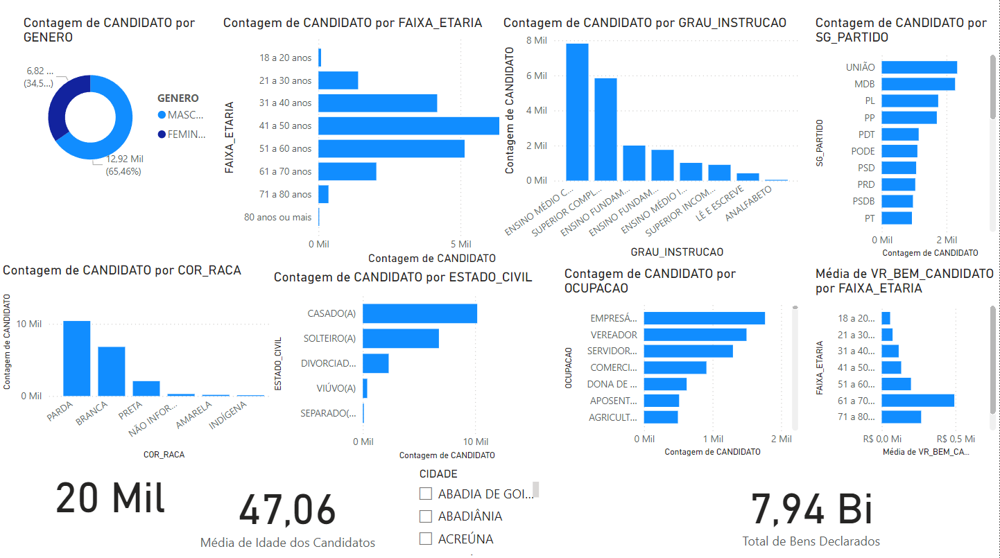

Descubra quem são os candidatos que disputaram as eleições municipais de 2024 em Goiás!
Este projeto traz uma visão detalhada sobre o perfil dos concorrentes, analisando idade, gênero, ocupação, escolaridade e bens declarados. Com dados organizados e visualizações intuitivas, você entenderá melhor o cenário político e as características dos candidatos de cada região.
Análise do Perfil dos Candidatos às Eleições Municipais de 2024
Detalhes do Projeto
Este projeto foi desenvolvido para visualizar e analisar o perfil dos candidatos às eleições municipais de 2024 no estado de Goiás, utilizando dados detalhados sobre os candidatos e seus bens declarados. O objetivo principal foi criar uma ferramenta intuitiva e acessível, permitindo uma melhor compreensão do cenário eleitoral. Para isso, utilizei duas bases de dados principais: uma contendo informações como idade, gênero, escolaridade, partido e ocupação, e outra com os bens declarados, possibilitando uma análise mais ampla do contexto socioeconômico dos candidatos.
Para otimizar a experiência do usuário, implementei um painel de filtros dinâmicos, que só é exibido quando necessário, permitindo a segmentação dos dados por cidade, cargo disputado, partido, ocupação, gênero e escolaridade. Além disso, o dashboard apresenta cartões com indicadores-chave, como total de candidatos, média de idade e valor total dos bens declarados, além de gráficos comparativos sobre faixa etária, nível de instrução, cor/raça e patrimônio. O projeto foi desenvolvido inteiramente no Power BI, com o Figma sendo utilizado para a criação do plano de fundo, representando um excelente exercício de ETL e reforçando minha capacidade de trabalhar com ferramentas de análise de dados.
Confira mais detalhes no artigo completo no Medium e na publicação no LinkedIn.
Galeria de Imagens
 Paleta de cores escolhida para o projeto.
Paleta de cores escolhida para o projeto.
 Design do plano de fundo do dashboard desenvolvido no Figma.
Design do plano de fundo do dashboard desenvolvido no Figma.

Rascunho inicial do projeto.
 Relacionamento entre as tabelas utilizadas no projeto.
Relacionamento entre as tabelas utilizadas no projeto.